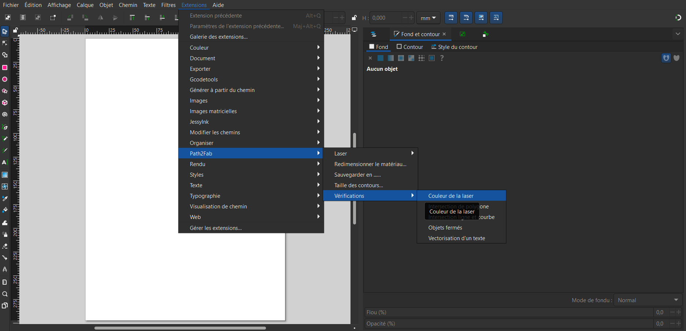
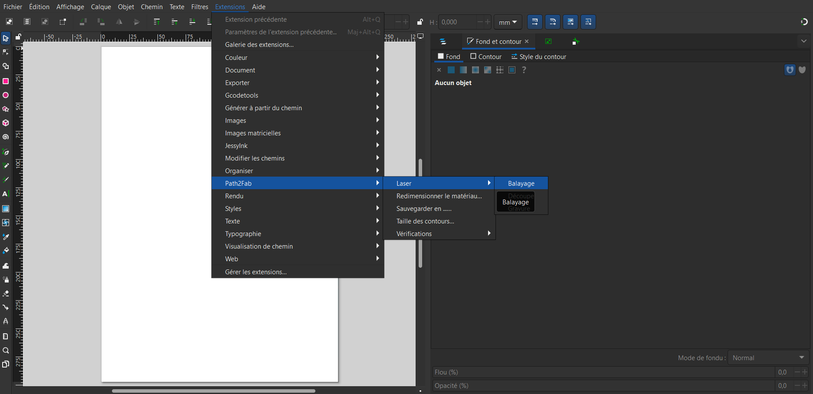
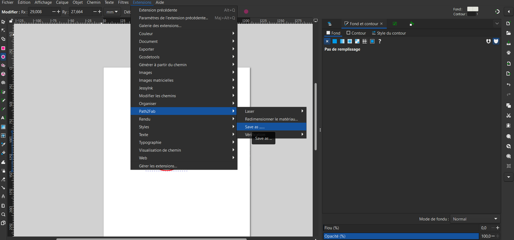

Vérification et préparation du fichier
Important : Toutes les étapes suivantes doivent être effectuées sur un fichier préalablement enregistré. Cela garantit que vous ne perdrez pas vos modifications et que vous aurez un retour le plus complet possible.
Objets fermés
Veillez à ce que toutes les formes utilisées pour la découpe soient bien fermées. Des formes ouvertes peuvent entraîner des résultats imprévus. Cette extension est conçue pour vous aider à éviter ce type de problème.
Comment y accéder
Dans votre extension Path2Fab, retrouvez cette option dans l'onglet "Vérifications" sous le nom "Formes fermées".

Résultat attendu
Vous pouvez voir vos erreurs grâce à la flèche rouge présente sur l'image.
Objets isolés
Il peut arriver qu'un objet se crée hors du plan de travail. Cela peut entraîner des surprises au moment de la gravure, c'est pourquoi cette fonctionnalité aide à vérifier cela avant l'utilisation.
Comment y accéder

Exemple de retour

Intersections
Vous avez plusieurs types d'intersections, et l'extension les gère différemment en fonction des cas.
Comment y accéder pour les polygones

Comment y accéder pour les lignes

Exemple de retour

Vectorisation du texte
Les textes non vectorisés ne sont pas compris par la découpeuse laser. Il est donc essentiel de les vectoriser. Notre extension vous permet de vérifier facilement tous les textes présents dans votre design sont vectorisés.
Comment y accéder

Si vos textes sont encadrés en rouge sur l'image générée, cela veut dire qu'ils ne sont pas vectorisés !
Un exemple du retour après la vérification :

Pour mettre votre objet en chemin, voici comment faire :
Vérification des couleurs
Vous ne savez pas si vous avez utilisé le bon rouge ou juste la bonne couleur pour la découpeuse laser ? Cette extension vous permet de le vérifier.
Comment y accéder
Un exemple de retour :

Aide à la réalisation
Mode de la laser
Le logiciel de découpe laser cut est un logiciel permettant de passer du dessin à la réalité.
Il ne comprend que certaines couleurs qui permettent de gérer les différents modes de découpe.
Il vous faudra donc utiliser ces couleurs ci-dessous.
Découpe : Rouge (#FF0000)

Gravure : Bleu (#0000FF)

Balayage : Noir (#000000)
Epaisseur des contours
Il vous faudra parfois mettre vos contours à 0 ou alors juste changer l'épaisseur, car celle-ci vous perturbe. Cette extension vous permet de changer le contour des objets que vous choisissez.
Sélectionner les formes

Comment y accéder

Pour finir, vous pouvez appliquer définitivement la taille sur "Appliquer" puis quitter, ou alors quitter directement et les objets ne changeront pas.
Enregistrement du fichier
Vous pouvez enregistrer votre fichier dans les formats suivants :
- DXF-12 : pour la découpeuse laser
- SVG
Comment y accéder
Sélectionnez le format souhaité :

Redimensionner le fichier
Vous pouvez redimensionner votre fichier en fonction de vos besoins. Suivez les étapes ci-dessous :
Comment y accéder

Sélectionnez le format souhaité :

Retirer les groupes
Sur Inkscape, on peut former des groupes. Cependant, ces groupes peuvent causer des problèmes lors de la découpe laser ou de l’utilisation de la brodeuse. Assurez-vous qu’aucun groupe n’a été créé par erreur en utilisant cette extension.
Comment y accéder

Support
Si vous avez des questions ou des problèmes, consultez le dépôt GitHub ou contactez le support technique.